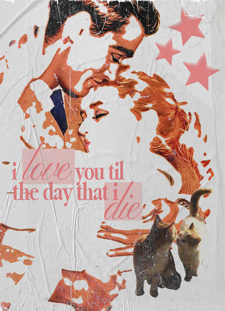

Birds of a Feather Poster

This poster design is inspired by the song "Birds of a Feather". The design captures the mood of the song through the colors used and modern typography, created using Adobe Photoshop and Illustrator. The design evokes a sense of connection.
Apps Used and References
- Adobe Photoshop – For image manipulation and graphic design.
- Adobe Illustrator – For vector design and typography.
- Song: "Birds of a Feather" by Artist Name – The inspiration behind the design.
Design Concept
The concept behind this design is to visually represent the themes of connection and love, based on the lyrics. The use of a couple as the main highlights focuses on the song lyric used.